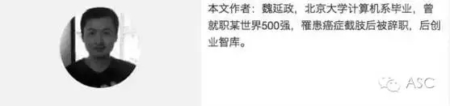

互惠动态
|
|
41岁英年早逝的北大才子，给四岁幼子的临别赠言！
他从小就是大人口中那个“别人家的孩子”，
1994年考上北京大学计算机专业，
1999.8-2001.8 新加坡国立大学电子工程硕士，
2004.10取得英国南安普敦大学计算机博士学位，
2006.7-2013.6任华为无线营销部总裁助理。
然而今天要讲的，不是一个精英人士一路开挂走上人生巅峰的故事。

他叫魏延政，
1975年出生，
2011年2月被确诊罹患“透明细胞肉瘤”，
该病三年死亡率80%。
为对抗癌细胞，
他失去了整条右腿，
半年内三次绝食近3个月，
经历了大剂量的化疗和放疗，
经过5年的苦苦坚持，
8月8日不幸走了。
临终前，
他给四岁幼子写下三句话，
这两天在朋友圈疯传，
读来令人潸然泪下。

我问儿子，“你知道爸爸得了癌症可能会死的，你知道死亡是什么？”儿子说，“就像超市里的死鱼，它们的爸爸妈妈再也见不到宝宝了，宝宝也再不能见到它们的爸爸妈妈了。” “对，那么如果爸爸没了，就再也不能教你学习知识了，你现在为什么不珍惜爸爸还在你身边的时间呢？” “要是你没了，要是我很想你，你还能回来吗？” “不能了。” “要是我很想很想很想你呢？” “那我也回不来了。” 小人儿坐在我的腿上，茫然了好一会儿，眼里的泪水越来越多，我也无法忍受，我知道这个对话不能再继续下去了。我又搂起他不住亲吻，但不知道说些什么。
这时候，我心里开始盘算，假如我真的哪一天突然没了，我该留给他些什么。也许时间不允许我再这样一个字一个字一幅图一幅图的教他了，我究竟该留给他些什么？我没有想到当今的幼儿园居然教了四岁孩子那么多汉字、算术，这在我们的童年、西方社会当今的幼儿园都是极力排斥的。幼儿园就把小学的汉字、运算都教了，孩子真到了小学，你又不能教他中学大学内容，他们自认为什么都会了，还能有几个聪明的孩子专心听讲？专心的怕是从幼儿园到小学总也什么都学不会的吧。现在的教育体制实在扭曲，幼儿园把小学的学完了，小学就学奥数。“奥数”这两个字我听了就觉得恶心呕吐，我倒是当年拿过全国数学联赛奖的，大学隔壁宿舍就有个我们那一级代表中国拿到国际奥赛数学金牌的。人家都谦虚的从来不提“奥数”这两个字，现在的小学中学是全民奥数，好似全中国的小学生不能人手一块世界奥数金牌就不配做中国人似的，我请问，教奥数的老师自己有几个当年拿过省级竞赛奖？还有中关村那些畸形变态的课外教育机构，确有北大清华教授高材生来执教，先秦两汉诸子百家内容生动，十岁孩子听不懂的父母陪读要做好录音笔记回家继续补课，你要说你孩子还在读大学中庸，你都不好意思开口，人家都把尚书春秋读完了；你的孩子每天只睡7小时，人家的孩子每天只睡5小时，其余时间不在课堂里，就在这个兴趣班到那个兴趣班的开车路上，吃饭都是车上吃；人人都以14岁学完量子物理、高等代数为荣。我们真的要把我们的孩子个个都培养成为爱因斯坦、图灵、冯友兰这样的世界级学术泰斗吗？他们的童年都这么扭曲的勤奋吗？那个少年打架泡妞成年把诺贝尔、图灵、美国最高心理学奖拿个遍的赫伯特西蒙的少年时代好像没有那么刻苦吧？请问这样的人几百年才能出一个？能是你的孩子吗？一旦将来不能成为世界知名大学者、大教授，那么15岁前扭曲的童年少年时光200％的付出给奥数、先秦哲学、量子物理是多么荒唐变态的一件事？最后到了30岁拿几张别人不紧不慢也能拿到的这证那证一起去给不紧不慢接触社会、生活、市场、消费的当年二三流学生如今当上总裁CEO的人打工，回首前30年，女朋友没时间谈、朋友哥们儿也没交上几个、说话办事举手投足技不如人、工作三年辞职六次都因为上司在他眼里是个傻逼、相亲带上800度眼镜请女孩子吃饭主动买100次单最终没一个想要你，这种人生是现在教育体制的目标吗？还有人拿中关村补习班说事撰文“寒门再难出贵子”，真是可笑至极，请问什么是贵人？考上北大清华就能成为贵人？少儿时代每年投资几十万和30岁后人生回报真能成正比？毛泽东蒋介石那个年代的贫富差距比当今不知大多少倍，他们身无分文走出乡村上过什么贵族学校名牌大学？林徽因梁思成徐志摩是靠着殷实的家资遍访世界名校成了一代才子佳人，但同一时代的华罗庚直到在西南联大当上正教授也只有小学文凭，和闻一多一家八口合租一间破屋仅一帘隔开两家人，在这间屋中写出哥德巴赫猜想论著获得民国1941年国家科技进步一等奖、仅他一人，再后来人都没出国，芝加哥大学为之立塑像，列名影响世界最伟大的前80位数学家。 可见，世上无难事只怕有心人。不要因为中关村一时的刮噪，就认为古今中外千年历史总结的“寒门贵子”的规律经验就被推翻了。人生若有好的家境条件固然成事的难度障碍减掉不少，但不意味着将来的天下就是中关村那点兴趣班所能引导的。读书学习固然仍需十年寒窗专心努力，能上哈佛斯坦福当然要志在必得，但学习的场所未必都在几十万一年的北大清华执教的兴趣班里，学习的目标也不是100％都在教科书里，要有个平衡，如今互联网相信社会，想学什么网络上都有，除了数理化和文史哲，生活、幸福、社会、经济、投资、创业这些东西也应该在18岁上大学前有所了解，不要再成为高考自己有什么兴趣想报什么专业都不知道的教育牺牲品。人生应该是丰富多彩的，有时间应该读读古今中外历史名人的传记，看看别人是怎么活的，也想想自己该怎么活这一生。文史哲可以当作学术来研究，也可以当作人生来修养，量子物理可以当作学术来研究，也可以当作某些商学院混饭吃的教授瞎忽悠的商业哲学的原理，反正台下听戏的是傻子，台上唱戏的是疯子，各有各存在的道理，但是谁有真本事最终会水落石出，没有真本事的终究是沉沙一般半纸而落。
也许我的时间不多了，这么多的道理不是一时半会能给他说清楚的，我究竟该给4岁的孩子留下些什么？我还在搂着他一边亲吻他的小头发一边继续沉思着，平日里闹腾的不让我抱的小人儿那天也出奇的安静，似乎一直在等待着我将要给他说些什么。
终于，我拉着儿子走到他的小黑板前，写下四个字“智力、毅力”，豪气干云的说，“跟爸爸大声念，人生做事第一要靠‘智力和毅力’！” 儿子跟着念了一遍。
我说“今天就记住这四个字，明天和后天爸爸再每天教你四个字，你现在或许不懂什么意思，但是一定要把爸爸教你的这几个字记住，每天给爸爸背一遍。如果爸爸有一天没有了，你要每天都想一想这几个字是什么意思。今天这四个字的意思是，智力就是你聪不聪明，毅力就是一件事没做好要有长年累月的决心一定要把它做好为止，这就叫毅力，毅力和智力是相辅相成的，没有人天生就一辈子都聪明，小时候聪明但是没有毅力不努力也就小时了了，只有有毅力的人可以把自己变得越来越聪明”。 第二天儿子放学，我又教了四个字，人生做事第二要靠“朋友和助力”。让儿子记住，小孩长大后就要自己讨生活混社会，做人在先做事在后，所谓做人简单讲就是多交朋友，一群人的力量总比一个人大得多，对朋友要真诚相待，你帮朋友，朋友帮你，这样才能做大事。
第三天的四个字是“眼界、定力”。这个给他解释有点费力，懂不懂先记住点粗浅的再说吧，眼界就是一个人能力变大了、能做的事变多了，他就能见识到接触到一般人一辈子都接触不到的事情，他就比一般人懂得多的多，这就叫眼界；当一个人能力大能做的事多了，就会有很多人和事都想找他来做，好事坏事都有，甚至好事里面都可能蕴藏着坏事，只是短时间很难看到，这时候这个能力大眼界大的人就需要禁得住诱惑、少犯错误、多做好事，这就叫定力。这世上大多数人也就只能做到昨天说的“朋友和助力”，只有少数人才能做到大能力、大眼界、大定力。
此后每天上学出门前，都叫儿子把人生做事这三句话给我背一遍，他懂不懂我不知道，但是我很欣慰。
近些日子，身体几乎到了崩溃边缘，大堆胸腔积液导致无法呼吸，住院治疗。我自己常常预感是否走到了尽头，连续几天滴食不进，仅靠滴液维持，喘气说话也极度困难，医生亦对妻子说，“做好思想准备”。活着，真难！
过了些日子，我又如疯子一般吃了碗面条，宣布，我还活着。几日后，有惊无险的回到家里。几度灰心绝望之后，发了条丧气的微信朋友圈，只得北大校友看得见。得到的多是鼓励，理解者甚少。次日住友集团朱晖校友来家看望，亦兄亦友的关切了许多话。
在生不如死的疼痛中又挨到了儿子幼儿园放学回来，用哑了音几乎说不出话的嗓子喊儿子过来，让他搬个小凳子坐在我摸得着的地方，摸着他的毛毛头，说“好些天没讲故事了，咱们今天接着讲三国”。每到傍晚，我每说一句必咳十下，去他娘的，这条命豁出去了，“前几次讲了桃园三结义、曹操、吕布的故事，今天咱们讲关羽的故事”。
关公，曾经有一段时间和他的大哥刘备、三弟张飞在战争中被打散了，他曾一度被曹操收拢帐下，曹操用当年吕布的天下第一名马“千里赤兔兽”和“美髯公”的雅号收买关羽的心，但关羽从不为之所动，执意要去寻找失散的哥哥刘备。因了这个缘故，后人奉关羽为忠义千秋的武圣人。曹操百般无奈，只好遂了他的心愿，也算交下这个朋友，放他走了。于是就有了流传百世的“过五关斩六将”、“千里走单骑”的故事。
现在，爸爸问你一个问题，前次讲过“三英战吕布”的故事，刘关张三个人合起来都打不过吕布一个人，为什么曹操杀了吕布这个天下第一武将，却偏偏喜欢关公？关公和吕布他俩谁厉害？不到五岁的儿子当然答，吕布单打一个关公，肯定是吕布厉害。我说，不错，但是曹操为什么更喜欢关公一定要留住关公为自己效力呢？儿子摇摇头。
我问儿子，“爸爸让你记住的人生做事第二要靠什么？”
儿子很快就回答，“靠朋友和助力”。
“对，因为关公的忠诚和义气，他能得到很多信服他的人愿意帮助他，于是关公后来有了千千万万的将军和士兵帮他打仗，而且他懂谋略，懂得指挥千军万马运筹帷幄决胜千里。那么他和仅仅自己武功厉害却没有朋友不懂谋略的吕布相比，谁厉害？”
“关公！”
“对。所以，记住爸爸告诉你的'人生做事第二要靠朋友和助力'，和朋友要讲义气，你帮朋友，朋友帮你。那么，关羽的谋略又从哪里来呢？”
“……不知道”
“读书和实践，就是知行合一。”
“……”
“关公过五关斩六将千里走单骑这个故事中有这样一个小插曲，在有一关，守城将军想要害死关公，命手下人在黑夜用柴草烧死关羽。手下人放火前出于好奇，想看看守城将军要烧死的是个什么样的人物，于是隔窗偷偷一看，不得了，眼见关公威风凛凛端坐在油灯前，左手拿一本《春秋》，右手捋着胡须，这哪里是个凡人，简直就是天神下凡！于是这个人不忍加害关公，关公因此得以平安度过这一关。关公夜里读的那本书《春秋》讲的都是我们中国历史上文化思想和军事战略最鼎盛最活跃的周朝的历史故事，关公的谋略就是一半来自这些书里，一半来自他领兵打仗的实践中。那么，关公夜读《春秋》是恰恰这天他偶尔读了一次就被害他的人碰巧看见了吗？”
“……不知道”
“肯定不是。关公就读了一次书，就被别人看见了，天下没有那么巧的事。一定是关公读书习以为常才会被人看到。所以，读书学习不是一朝一夕一曝十寒的事，而是持之以恒、天天都要做的事。爸爸问你，爸爸说的‘人生做事第一要靠什么’？”
“人生做事第一要靠智力和毅力！”
“对，记住，关公坚持每天读书，持之以恒，这就叫作‘毅力’。”
“记住了。”
“你知道关公最终的结局是怎样的吗？”
“不知道。”
“关公后来成了三国当中蜀国最厉害的‘五虎上将’的第一名将，统率管理魏蜀吴三个国家必争的当中要地荆州。因为他的能力和眼界都超出了一般的常人，这时候的他镇守荆州大片土地就变得责任重大，他的每一个大大小小的决定都会影响到千千万万人的生命安全和生活幸福，所以他这时候做每个决定都要尽可能的避免犯错误。想想爸爸说的‘人生做事第三要靠什么’？”
“眼界和定力！”
“对，关公这时候能力非常大，能做的事非常多，那么很多坏事和诱惑也会随之而来，如果不谨慎就非常容易犯错。所以，禁得住诱惑、少犯错误就是定力。”
“记住了。”
“后来，关公因为自己的功绩越来越显赫，就变得傲慢了，于是就给敌人可乘之机，导致关公大意失荆州，而后败走麦城，在途中死在几个无名小辈的手中。这说明，人的定力不但要禁得起外部的诱惑和错误信息，还要禁得起来自自己内心的骄傲、迷惑和错误。”
THE NEXT BEST THING
某晚做了个梦，醒来后梦中场景清晰可见历历在目。我已头发半白，和儿子做在斯坦福的同一间教室里，我又重新开始了大学学习。开学第一天，窗明几净，一位比我年级更长的白发老者在课堂上当着全部学生问我，“你这么大年龄为什么要和这些年轻人在一起读书？”我愉快的回答，“斯坦福的教学改革印证了我多年以前认定的一件事——读书是个一辈子的事。他们用年轻的想象力读书创造，我用我一生的经历去分享读书。我的生命已离不开这芳草青青的校园，我愿把全部生命撒尽在永远年轻的大学校园。”

关于互惠，您了解得够多么？
请外国学生来家庭照顾孩子，辅导孩子外语？
只了解这些是不够的！
获取更多信息请参考以下方式：
联系ASC：
电话：86-21-61116069(上海中心）
86-25-66065662（南京中心）
全国家庭均可申请！
手机：15601666586（可加微信）
Q Q：3259637585
微信：asc-center
邮箱：info@asc-center.com
网站：www.asc-aupair.com

感谢您对我们的关注